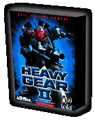

Feel the scream of lasers against cold steel and prepare for the clash of armor against armor -- Heavy Gear II for Linux is here!
Get ready for the ultimate in mech experiences: a thrilling combat adventure pitting robot against robot in the distant future is waiting for you. Pit squads of your best mechanized warriors against the enemy to save Terra Nova -- but sheer firepower won't be enough. Use your guile and wits to get behind enemy lines and use your resources to their fullest, before it's too late...
Heavy Gear II also adds some firsts for commercial Linux games:
- First conversion from Direct3D to OpenGL®
- First to support 3D audio effects using OpenAL
- First to have joystick support using SDL
And best of all, it's for Linux -- the power of the future with the power of the future's operating system.
| Minimum System Requirements | |
|---|---|
| Linux Kernel | 2.2.x and glibc-2.1 |
| Processor | Pentium 233 MHz (with 3D acceleator card) |
| Video |
Video card capable of 640x480 resolution XFree86 version 3.3.5 or newer 16-bit color |
| CD-ROM | 4x CD-ROM drive (600 KB/s sustained transfer rate) |
| RAM | 64 MB required; 128 MB recommended |
| Sound | OSS compatible sound card |
| Hard disk | Minimum 450 MB free space |